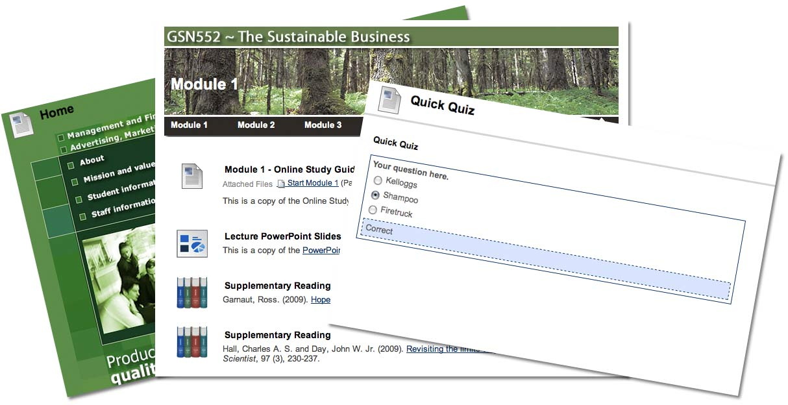

Tweaks is a Building Block for the Blackboard LMS which enables academics and support staff to customise and extend their site presentation, navigation and structure as well as add templated page designs, small learning activities and Blackboard functionality.
Download and install Building Block via Blackboard System Admin (from Oscelot). Refer to installation documentation.
Site coordinators! To trial a Tweak in your site, refer to the Description and Screenshots page.
Copyright 2011 Tim Plaisted, Queensland University of Technology Licensed under the Apache License, Version 2.0 (the "License"); you may not use this file except in compliance with the License. You may obtain a copy of the License at http://www.apache.org/licenses/LICENSE-2.0 Unless required by applicable law or agreed to in writing, software distributed under the License is distributed on an "AS IS" BASIS, WITHOUT WARRANTIES OR CONDITIONS OF ANY KIND, either express or implied. See the License for the specific language governing permissions and limitations under the License.
Tim Plaisted, Nikita Tkachov, Queensland University of Technology (BB7.2, BB9, BB9.x versions)
BB8 Port: Griffith University with Tim Plaisted
Please get in contact if you would like to help this project! Specific help requirements:
If you are interested in customising BB and would like to develop a Tweak, please go ahead! You can test run with the building block installed via the admin interface. Note if you add multiple files, wrap with [] chars:
js: ['scripts/jquery_script1.js', 'scripts/jquery_script2.js'],
css: ['styles/css1.css','styles/css2.css']
Building Block (on Oscelot). Alternatively, you can download the entire project in either zip or tar formats.
You can also clone the project with Git by running:
$ git clone git://github.com/Tweaks/Tweaks
No major issues. Please contact if you want to contribute changes / testing or if your project needs specific updates.. e.g. new jQuery lib.